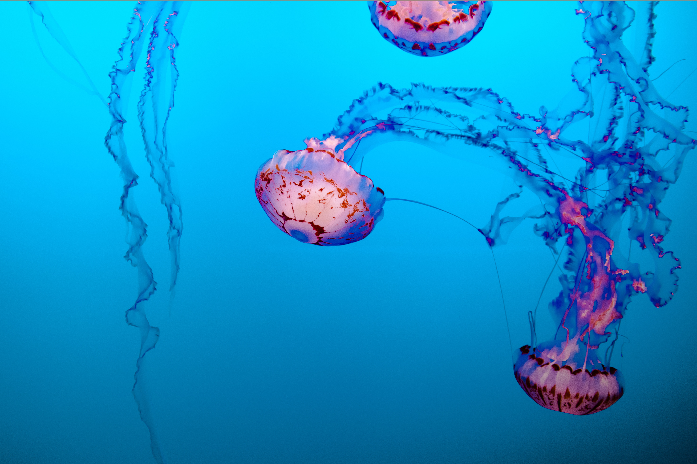

All about Jellyfish
Table of contents:
What are Jellyfish?
Different species w/ pictures
Where do we find them?
More facts about Jellyfish
See also...
References
What are Jellyfish?
The scientific classificantion of jellyfish is:
Kingdom: Animalia
Phylum: Cnidaria
Subphylum: Medusoza
Where do find them?
Jellyfish are found
Different Species w/ pictures

More facts about Jellyfish
See also...
References